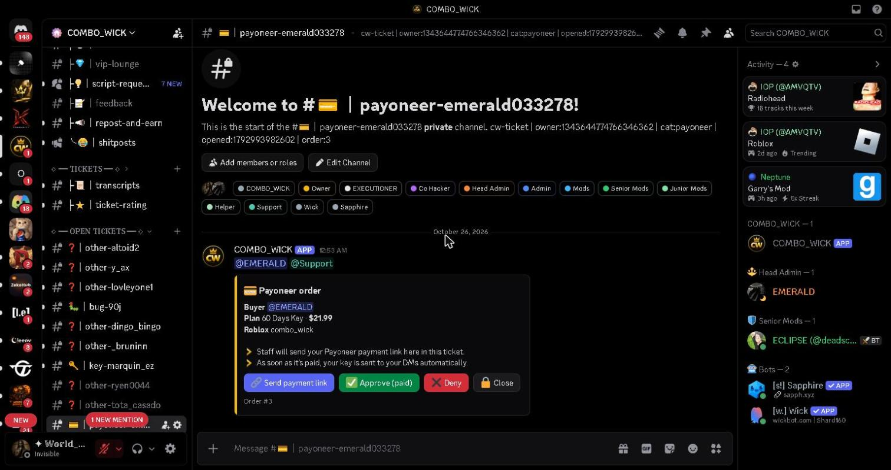
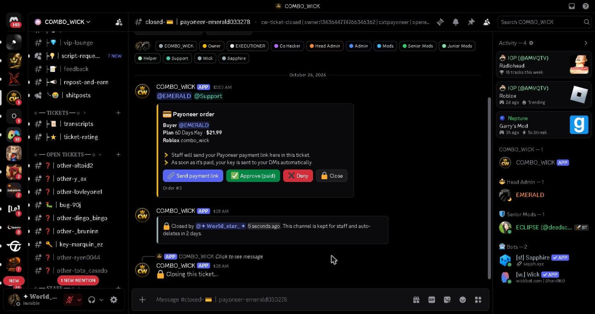
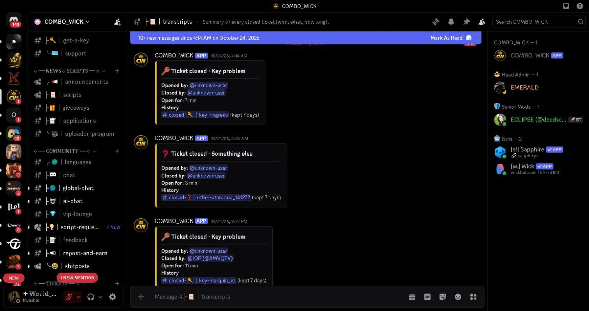

Screenshots from our own community server (the bot runs only there). The bot runs our private support tickets. Closed tickets are deleted after 2 days, so the bot needs to read the ticket messages to save a staff-only transcript (encrypted, deleted after 30 days) and to auto-answer common questions in the member's language.
1. A support ticket opened by the bot. The member and staff talk here. This is where the bot would read messages to save the transcript and suggest answers.

2. Ticket closed. The bot moves it to closed tickets and deletes it after 2 days. Today everything said in the ticket is lost at that point.

3. Current transcripts channel. Without Message Content the bot can only log who opened and closed the ticket and for how long. With it, the bot would save the full conversation for staff.

4. Language picker. The bot already replies to each member in their language (12 languages). With Message Content it would also answer common questions in tickets and our 7 language chats in the member's language, and flag scam links staff cannot read.